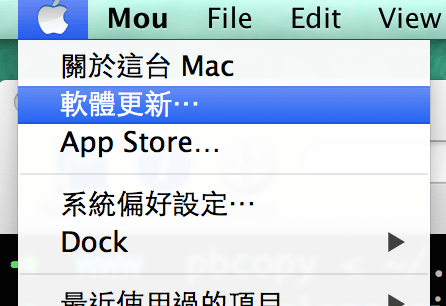
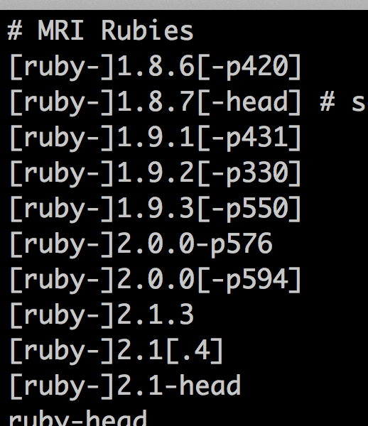
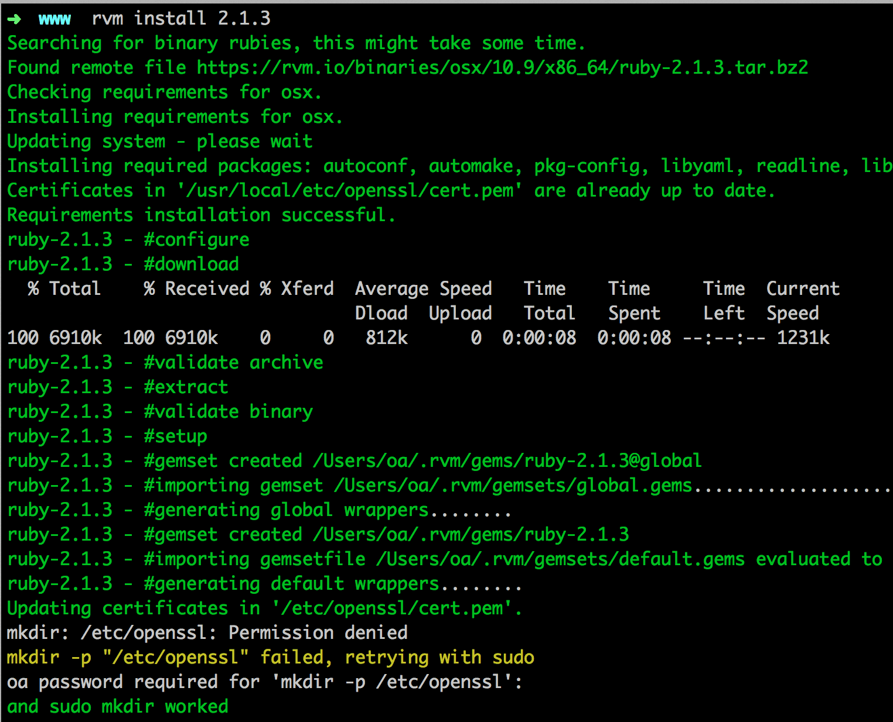
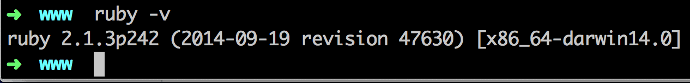

Mac Roby on Rails 筆記
系統
更新 OSX

下載 & 更新 Xcode
Homebrew
- 安裝 homebrew 可以參考這篇
ImageMagick
安裝 XQuartz
- 安裝 ImageMagick 需先有 X11 的 Support，OSX 10.8 拿掉了，所以需要下載安裝，載點
它是 .dmg 檔案，基本上就是下一步、下一步的安裝就可以，安裝完後重開
安裝 ImageMagick，
brew install imagemagick
MySQL
- 安裝 MySQL 可以參考 此篇
RVM
RVM 官網
curl -L https://get.rvm.io | bash -s stable檢查是否安裝成功，重新開啟 iTerm，
rvm -v
Oh My Zsh
若指定預設 Ruby 版本時出現權限問題可以這樣做，輸入
suod chown xxx:root /usr/local/bin #xxx 是你的userRVM 使用範例
rvm list # 列出電腦中已經安裝的 ruby 版本 rvm list known # 列出所有可安裝的 ruby 版本 rvm ruby-1.8.7-p334 # 切換ruby 版本到 ruby-1.8.7-p334 rvm ruby-1.8.7-p334 --default # 設定 ruby-1.8.7-p334 為預設的版本 rvm install ruby-1.8.7-p334 # 安裝 ruby-1.8.7-p334
Ruby
Ruby 官網
首先使用 RVM 列出可以安裝的 Ruby 版本
rvm list known
安裝 2.1.3，
rvm install 2.1.3
測試是否安裝成功
ruby -v
若有出現 readline.c 的錯誤時，可以試著以下指令:
rvm package install readline # 然後在安裝指令的後面加上 -C --with-readline-dir=$rvm_path/usr rvm install 1.9.3 -C --with-readline-dir=$rvm_path/usr
RubyGems
RubyGems 官網
rvm rubygems current檢查是否安裝成功
gem -v
設定
--no-ri --no-rdoc的參數，一般安裝 gem 也會同時安裝該 gem 的文件，但通常這些文件都是在網路上看的，因此不需要浪費空間和時間安裝在自己的電腦。vim ~/.gemrc # 打開 ~/.gemrc # 加上以下後, 存檔重新登入命令列即可 gem: --no-ri --no-rdoc
Bundler
gem install bundler --no-ri --no-rdoc
若已經有設定
--no-ri --no-rdoc為預設參數，則就不需要再加上--no-ri --no-rdoc。
安裝 Rails
如果是要安裝目前最穩定版本
gem install rails --no-ri --no-rdoc
檢查是否安裝成功
rails -v如果是要安裝特別版本
gem install rails -v=3.2.8 --no-ri --no-rdoc